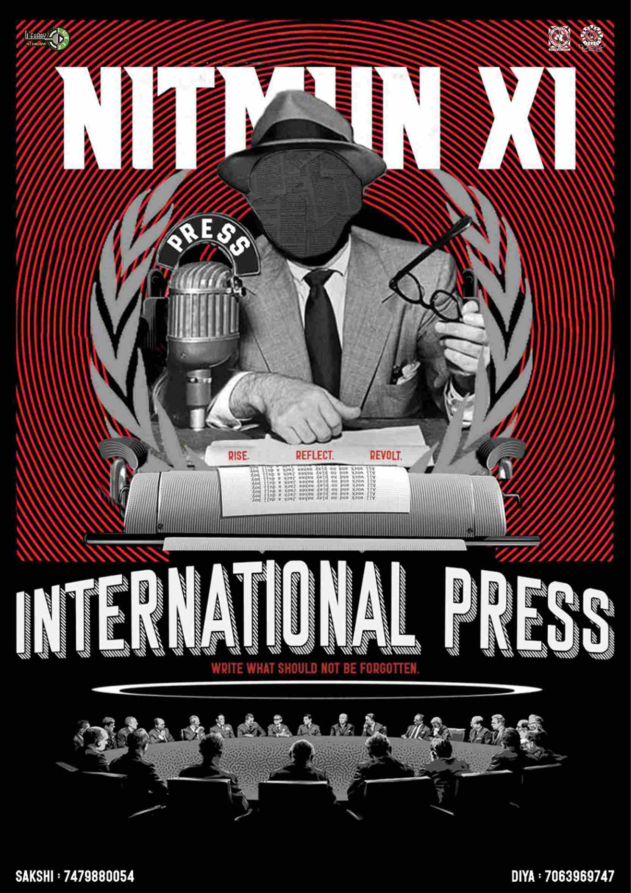
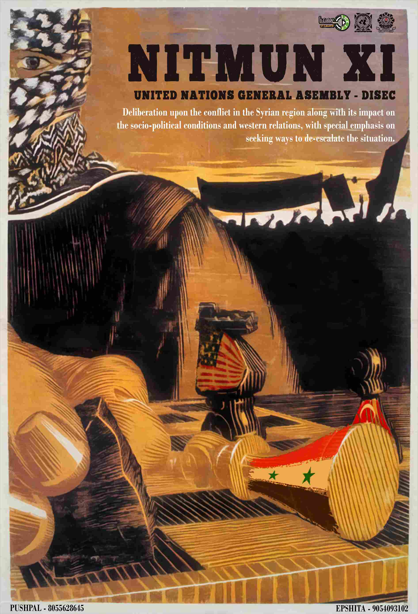
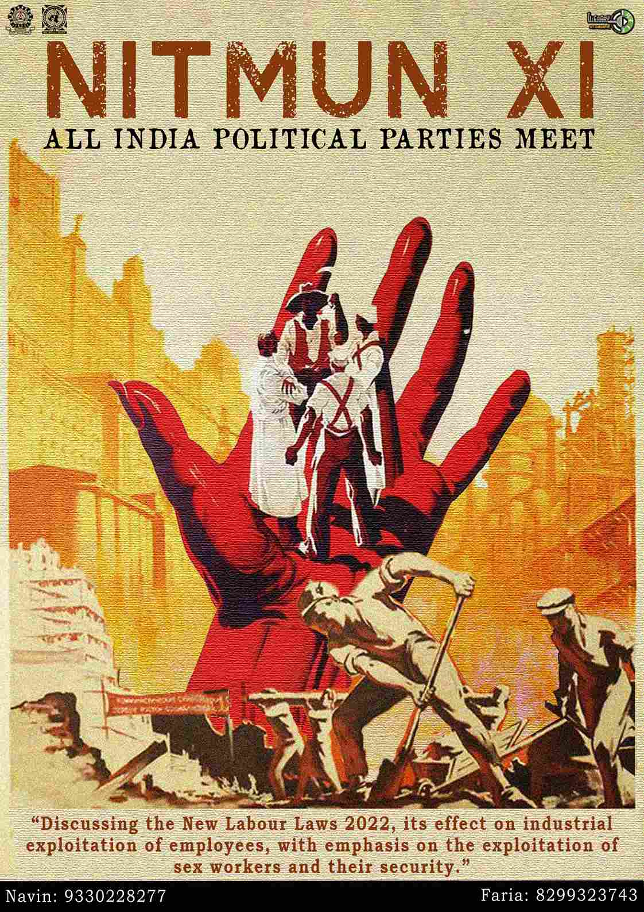
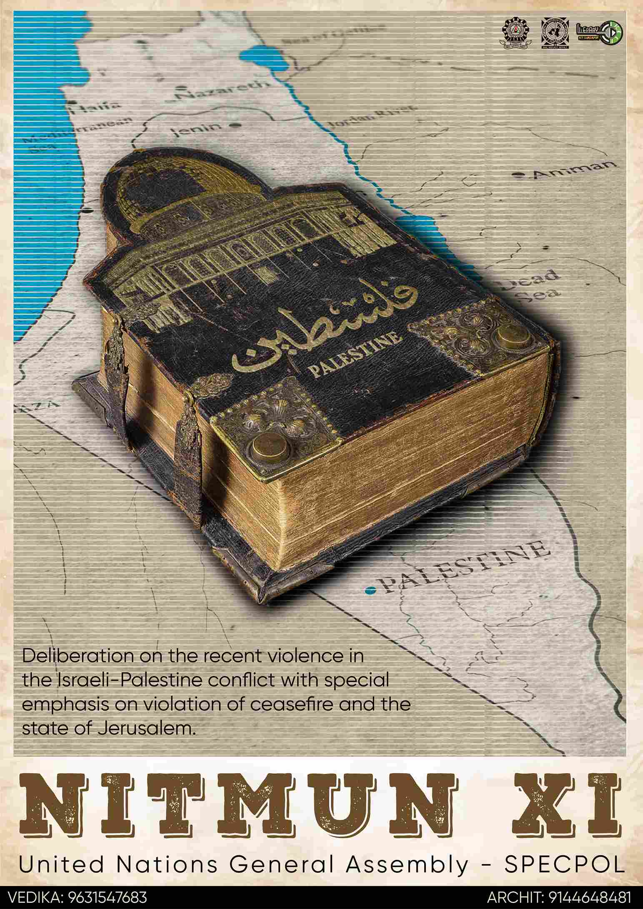

NITMUN XI
HOME | REGISTER | GALLERY | ABOUT US




ABOUT US
Literary Circle is the club in NIT Durgapur, which gives the college an extra. NITMUN is a forum convened by the members of the Literary Circle for discussion and analysis of global issues. It seeks to bring out motivated delegates from all over the country for brainstorming and discussing over significant international issues.
NITMUN promises a challenging yet a very entertaining time to all delegates. Our greatest goal is to make sure that each delegate learns how to tackle world issues better at the end of the conference as the world is in dire need of young leaders now.
Currently in its 11th edition, NITMUN has been extremely successful in providing the perfect experience to each delegate. Over the years, we have entertained more than 1000 delegates in total. Delegates arrive from all corners of India for an experience they will never forget.
ABOUT NITMUN
Literary Circle is the club in NIT Durgapur, which gives the college an extra dimension of creative expression in the midst of technical unilateralism and gives the students of the college an opportunity to transcend the ordinary and mundane. The Literary Circle conducts various events throughout the year.
The club is known to be highly selective in its admission of new members, with only about 10-15 students inducted out of the entire batch of 900 each year. Great believers of the phrase ‘quality over quantity’, the members selected every year are the best of the best in the field of expression and creativity.